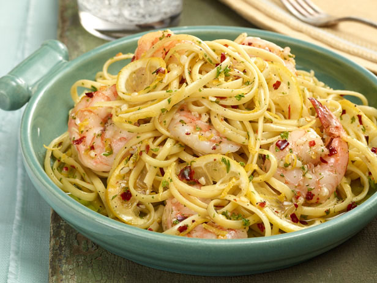

Shrimp Scampi

Description
In 2001, Regina Schrambling went on a week long odyssey in search of the best lasagna recipe. Her ideal here has an intensely flavored sauce, cheeses melted into creaminess as if they were bechamel, meat that’s just chunky enough and noodles that put up no resistance to the fork.
Ingredients
- 1cup extra virgin olive oil
- 2medium red onions, finely diced
- 2large cloves minced garlic
- 8ounces pancetta, diced
- Salt and freshly ground black pepper
- 1½cups good red wine, preferably Italian
- 228-ounce cans Italian plum tomatoes
- 3tablespoons tomato paste
- ¾pound ground sirloin
Steps
- For the sauce, heat ½ cup oil in a large heavy Dutch oven or kettle over low heat. Add the onions, minced garlic and pancetta, and cook, stirring, for 10 minutes, until the onions are wilted. Season liberally with salt and pepper. Raise heat slightly, add the wine and cook until it is mostly reduced, about 20 minutes. Crush the tomatoes into the pan, and add their juice. Add the tomato paste and 2 cups lukewarm water. Simmer for 1 hour.
- Combine the sirloin, cheese and eggs in a large bowl. Chop the parsley with the whole garlic until fine, then stir into the beef mixture. Season lavishly with salt and pepper. Using your hands, mix until all the ingredients are well blended. Shape into meatballs and set aside.
- Heat the remaining oil in a large skillet over medium-high heat. Dust the meatballs lightly with flour, shaking off excess, and lay into the hot oil. Brown the meatballs on all sides (do not cook through) and transfer to the sauce.
- Remove the meatballs and sausage from the sauce, and set aside to cool slightly, then chop coarsely. Spoon a thick layer of sauce into the bottom of a 9-by-12-inch lasagna pan. Cover with a layer of noodles. Spoon more sauce on top, then add a third of the meat and a third of the cheese mixture. Repeat for 2 more layers, using all the meat and cheese. Top with a layer of noodles, and cover with the remaining sauce. Sprinkle reserved mozzarella evenly over the top. Bake 30 minutes. Let stand 10 minutes before serving.